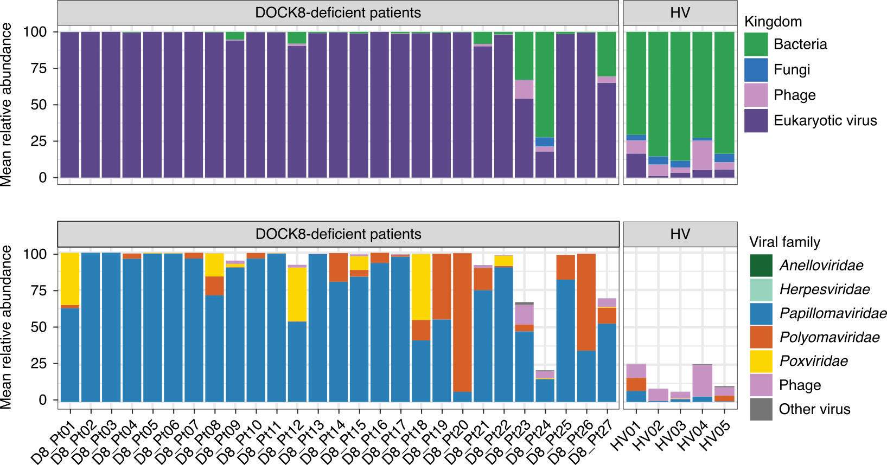
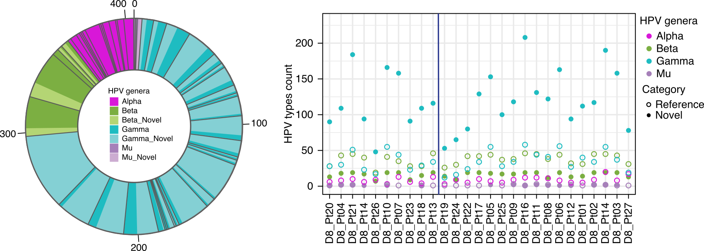
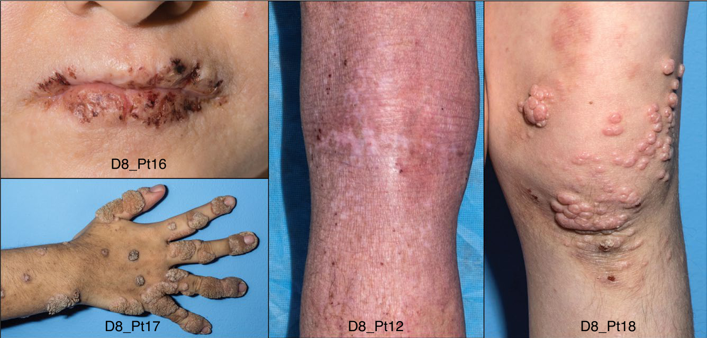
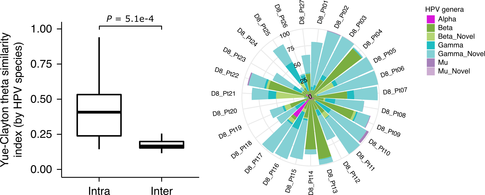
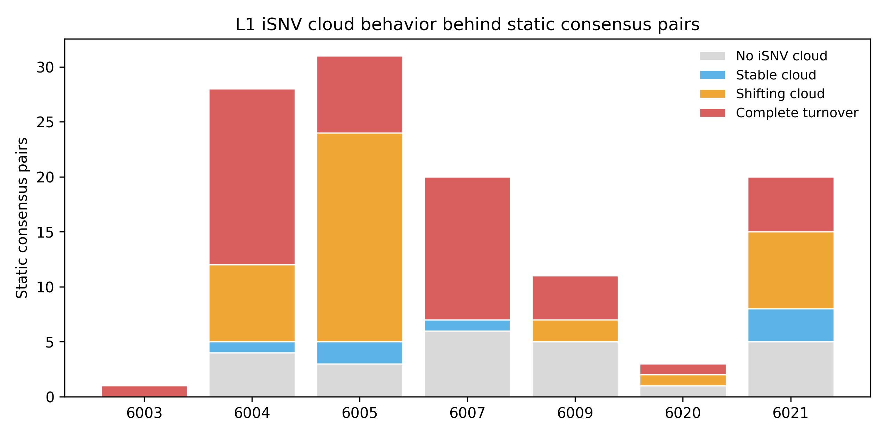
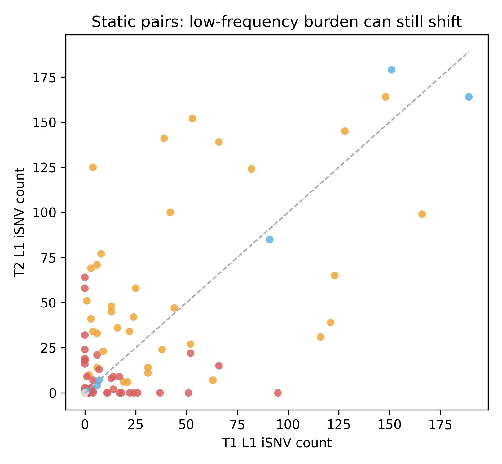
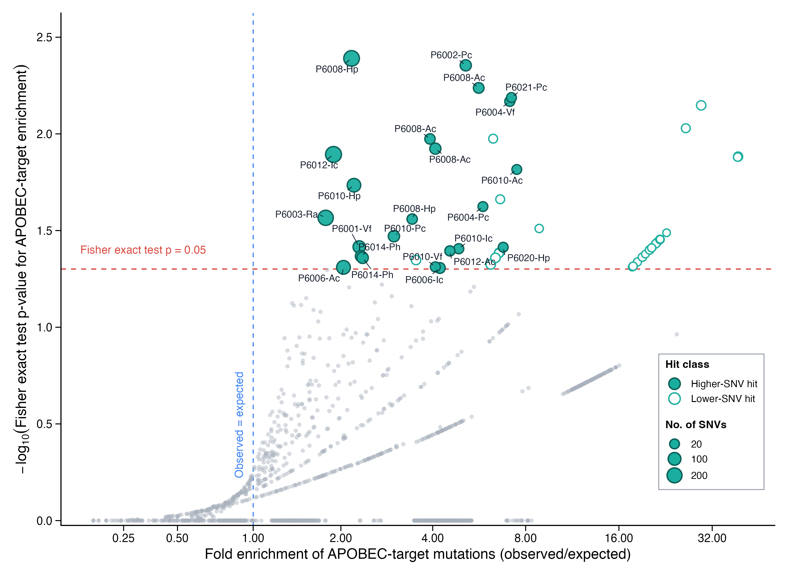
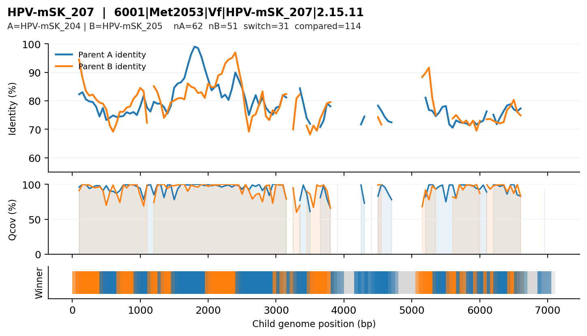
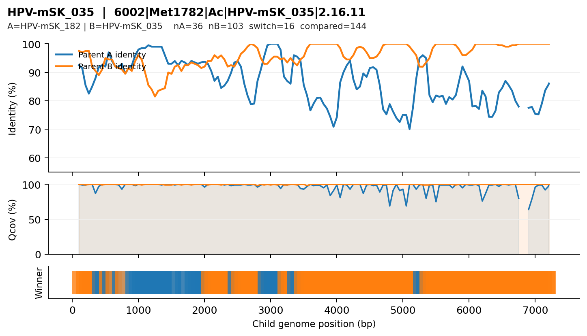

Biological setting
DOCK8-deficient skin carries dense multisite HPV co-infection, so persistence, transfer, and subtype turnover can coexist within one host.
Project update | HPV evolution in DOCK8 deficiency
This study uses strain-aware genomic analysis to separate dominant-backbone persistence, low-frequency cloud turnover, and rarer candidate new sequence change within dense within-host HPV co-infection in DOCK8 deficiency.
Biological setting
DOCK8-deficient skin carries dense multisite HPV co-infection, so persistence, transfer, and subtype turnover can coexist within one host.
Core challenge
An apparent later sequence difference is ambiguous unless reference bias and hidden subtype structure are removed first.
This update shows
How data curation, 3-step mapping, site-matched longitudinal adjudication, APOBEC screening, and mosaic screening were turned into one interpretive framework.
Abstract
This abstract gives the full project in paper-style form before the page opens into background, curation, mapping, and results. The goal is to make the logic readable from the start: why the cohort matters, what changed methodologically, what was tested, and what the current evidence supports.
Background
Previous metagenomic work showed that DOCK8-deficient skin has an expanded virome dominated by papillomaviruses, making it an unusually permissive ecosystem for cutaneous DNA viruses. That work defined the ecological scale of HPV colonization, but it was not designed to resolve how individual HPV populations change within a host. In a setting with many HPV types across multiple body sites and timepoints, an apparent sequence difference is intrinsically ambiguous. It may reflect persistence of the same dominant backbone, redistribution between sites, turnover beneath an unchanged consensus, replacement by a previously minor population, host-associated mutational pressure, or less commonly genuine new sequence change. We therefore extended the earlier virome-level work by moving from genome recovery to within-host population interpretation, using a framework built to separate dominant-consensus stability from sub-consensus dynamics.
Methods
We first reconstructed sample-level HPV read sets from the DOCK8 skin metagenomic cohort through raw-run intake, decontamination, sample-level merging, and paired-read repair. This preprocessing was necessary because reliable genome recovery and low-frequency analysis require correctly synchronized, sample-resolved read sets. The main analytical upgrade was a type-specific 3-step mapping framework. Quality-filtered reads were competitively mapped against a combined HPV reference collection, used to rebuild a sample-specific consensus backbone for each retained type, and then remapped to that backbone for LoFreq-based low-frequency variant calling. This replaced heterogeneous de novo contig backbones with a unified type-specific coordinate system for quantitative comparison. Before interpreting temporal change, we established a within-host spatial baseline by asking whether the same HPV type across multiple skin sites shared a dominant consensus backbone or remained site-structured. We then restricted longitudinal analysis to persistent same-patient, same-type, same-site pairs from 7 patients that passed stringent L1 coverage and depth criteria. Longitudinal change was adjudicated in two layers: dominant-backbone comparison first, then low-frequency cloud classification for backbone-static pairs. In parallel, we ran a complement-collapsed APOBEC-consistent enrichment screen using callable TCW/WGA target sites with a no-softclip rescreen, and a conservative sliding-window local-BLAST mosaic screen as an exploratory recombination branch.
Results
Spatial structure was mixed rather than uniform. Among 224 within-host multi-site comparisons, 141 (62.9%) shared identical or near-identical dominant consensus backbones across sites, whereas 83 (37.1%) retained substantial site-specific structure. In the longitudinal arm, 246 candidate persistent pairs were reduced by stringent quality control to 124 high-confidence L1 comparisons. At the dominant-consensus level, 114 of 124 pairs (91.9%) showed no L1 backbone change between timepoints, while only 10 showed any backbone-level difference. Yet dominant-backbone stasis did not imply complete molecular stasis: among the 114 backbone-static pairs, only 24 lacked detectable low-frequency L1 variants at both timepoints, whereas the remaining 90 still showed cloud dynamics, including 7 stable clouds, 36 shifting clouds, and 47 complete-turnover clouds. The 10 backbone-changed pairs were heterogeneous. Small-change events were more compatible with fixation of alleles already detectable at low frequency at T1, whereas larger and more novel-dominated events were more compatible with replacement by a different pre-existing population or with background switching. APOBEC-consistent enrichment was detectable only in a subset of rows, and mosaic screening yielded only limited coherent candidates, keeping recombination-like patterns in an exploratory position at the current stage.
Conclusion
The main contribution of this study is not simply the detection of within-host HPV variation, but its resolution into biologically distinct layers. Relative to earlier de novo assembly-based virome profiling, the 3-step mapping framework provides a unified type-specific coordinate system that makes longitudinal comparison quantitatively interpretable. Under that framework, within-host HPV dynamics in DOCK8-deficient skin are best described as dominant-backbone persistence with substantial low-frequency cloud turnover, plus focal host-editing signals and occasional candidate replacement events. The evolutionary signal is therefore real but modest: these viral populations are not completely static, yet most change occurs beneath an apparently stable dominant sequence rather than through frequent wholesale backbone evolution. This layered framework should also be useful in other complex cutaneous co-infection settings where persistence, replacement, and sub-consensus variation coexist.
Background
Earlier cohort work already established that DOCK8-deficient skin is a virome-expanded, papillomavirus-dominated ecosystem shaped by failed immune surveillance. This project reopens that phenotype at genomic resolution and asks how persistence, hidden structure, and true new sequence change can be distinguished within it.
Previous study
A previous study showed that the skin ecosystem in DOCK8 deficiency is fundamentally different from healthy skin. Instead of a bacteria-dominated community with only a small viral component, DOCK8-deficient skin shifts toward an expanded eukaryotic virome in which papillomaviruses become a dominant signal. That observation is the starting point of this project.
The same work also showed that this is not simply a higher-load version of one familiar HPV infection. Across the cohort, the skin carried 405 HPV types, including about 250 novel types, with especially strong Gamma expansion. The virome is therefore both heavy and taxonomically broad.
A later immune-recovery follow-up reinforced the same biological interpretation from the opposite direction: when host immune function is restored, the skin microbiome and virome move back toward a healthier state. Together, these studies show that the abnormal HPV burden is a biological consequence of failed immune surveillance, not a sequencing artifact.
Compared with healthy skin, DOCK8-deficient skin becomes virome-rich and heavily papillomavirus-dominated.
The cohort carries a broad HPV repertoire, including many previously undescribed types rather than a small repeated set of known viruses.
The phenotype tracks with immune status, supporting the view that failed surveillance permits persistent viral expansion.


Cohort frame
Once the previous study is taken as the starting point, the cohort itself becomes the analytical opportunity. DOCK8 deficiency is a rare primary immunodeficiency with severe cutaneous involvement, and this study follows 27 patients sampled across 8 skin sites, with a longitudinal core of 7 patients observed across multiple years.
That design matters because persistent multisite co-infection makes apparent sequence difference intrinsically ambiguous. A later sequence can reflect true new change, but it can also reflect long-term persistence, redistribution between sites, fixation of standing variation, or replacement by a pre-existing subtype already present within the same host.
Previous cohort-scale observations also suggest that HPV communities are more similar within a person than between people. Each patient should therefore be viewed not as a series of independent infections, but as a host carrying a structured internal HPV landscape. That is why simple type counting or consensus-only comparison is not enough.
27 DOCK8-deficient patients with multisite skin sampling, plus a longitudinal subset that allows temporal adjudication.
Immune failure makes persistence and coexistence visible for longer, exposing viral states that are often hidden in immunocompetent skin.
The central task is to distinguish persistence, transfer, standing variation, subtype replacement, host editing, and only then true new sequence change.


Clinical phenotype, virome expansion, papillomavirus dominance, diversity burden, and dependence on immune status.
It moves from virome-level description to strain-aware within-host interpretation by separating dominant-backbone stability from sub-consensus dynamics.
Once that biological context is clear, the next bottleneck is technical: the raw metagenomic cohort still has to be turned into stable sample-level genomes before any strain-aware comparison can begin.
Data Curation
This stage turns cohort-scale metagenomic data into defensible HPV genome inputs. The logic is simple: rebuild raw runs into sample-level paired reads, recover genomes by assembly, then explain why genome recovery alone was still not enough for downstream comparison.
Raw to clean reads
The starting material was a metagenomic cohort distributed across 545 raw SRR files, with many biological samples sequenced in multiple runs. Before any genome-level interpretation was possible, those runs had to be rebuilt into stable, sample-resolved paired-read sets.
The curation logic was linear: download and audit the raw runs, deplete host and other non-viral background with KneadData, merge runs at the biological-sample level, and then carry the merged paired reads into de novo assembly. This produced 202 combined sample-level metagenomic inputs from which HPV whole genomes and L1 sequences could be recovered.
Technical add-on
The heaviest HPV-rich samples were also the most likely to fail or stall during metaSPAdes. Audit of the merged paired-end data showed that the dominant failure was not random: 202/202 combined samples had R1/R2 header desynchronization after cleaning and merging.
This defect was corrected with BBMap repair.sh, which re-synchronized paired reads before
assembly reruns. All 202 samples were repaired successfully, with 0.00% reads lost
to singleton output, restoring stable genome recovery in the rescued samples.
202 / 202
Merged samples carried paired-read desynchronization at the R1/R2 header level.
repair.sh
BBMap-based paired-read repair restored strict R1/R2 synchrony before assembly reruns.
0.00%
Reads lost to singleton output after full paired-read repair across the merged sample set.
Methodological handoff
Even after genome rescue, de novo assembly alone could not solve the final comparative problem. The cohort contains many samples, many HPV types, and many related subtype backbones, so assembled contigs alone do not provide a stable shared coordinate system for downstream variant interpretation.
In other words, assembly answered the question can a genome be recovered from this sample? The next stage had to answer a different question: can homologous positions be compared consistently across samples and timepoints without confusing subtype divergence with new sequence change? That requirement motivated the move to 3-step mapping.
Analysis & Results
The analytical chain is deliberately layered: first remove reference bias, then define the spatial baseline, then resolve longitudinal dynamics at L1, and only then test targeted mutation signatures and residual mosaic candidates.
3-step mapping workflow
In DOCK8-deficient skin, HPV does not behave as a single clean lineage. Each specimen can contain many co-circulating types and closely related subtype backbones, so a naive T1-versus-T2 consensus comparison is intrinsically ambiguous. An apparent new fixed difference may represent genuine within-host sequence change, but it may also reflect ecological replacement by a pre-existing minor subtype already present below consensus level at T1.
The 3-step mapping workflow is therefore not a cosmetic refinement. It is the methodological backbone that converts raw metagenomic reads into a strain-aware coordinate system, so low-frequency iSNVs can later be interpreted as standing variation rather than as artifacts from an ill-fitting generic reference.
Competitive mapping is followed by strict L1 support criteria: MapQ and BaseQ filtering, >95% L1 breadth, and mean L1 depth ≥ 5X before a type is retained as a real dominant infection.
High-confidence major differences are folded into a sample-specific backbone, while low-coverage blind zones remain masked. This establishes the coordinate system before any evolutionary interpretation.
Remapping to the rebuilt backbone sharply reduces pseudo-SNP inflation and allows LoFreq to recover the T1 minor-allele archive used to distinguish pre-existing from genuinely novel T2 alleles.
Competitive recall
Map QC-passed reads to a broad HPV reference panel so each read first competes for its best-matching type rather than being forced onto one arbitrary backbone.
Consensus reconstruction
Rebuild a strict sample-specific consensus for each dominant type so the patient-carried genomic backbone is represented directly.
LoFreq variant calling
Remap reads to the patient backbone and use LoFreq to recover high-confidence low-frequency iSNVs that can later adjudicate longitudinal changes.
Spatial consensus structure
This is the first result-level checkpoint before any longitudinal interpretation. The question is: when the same HPV type is observed across different skin sites within the same patient, are the dominant consensus backbones broadly shared, or already compartmentalized by site?
The answer is mixed. A large shared component exists, making host-internal redistribution or self-transfer biologically plausible. But the site-structured fraction remains substantial, so later temporal difference cannot be read as new evolution by default. In other words, the same host already contains both connectivity and compartmentalization at baseline.
224
141 (62.9%)
83 (37.1%)
Broad intrahost sharing.
Site-matched L1 longitudinal analysis
This analysis asks a narrower but cleaner longitudinal question than the earlier all-site overview. For the 7 longitudinal patients, it restricts attention to persistent pairs defined within the same patient, the same HPV type, and the same anatomical site. In practice, the site-matched framework is built on the only two skin sites that are repeatedly trackable across these longitudinal patients: Pc and Ra. Under that control, the key question becomes whether L1 is truly static across time, or whether consensus only appears static while the low-frequency iSNV cloud underneath it continues to move.
The design deliberately separates two signal layers. First, it compares the L1 backbone consensus between T1 and T2 under strict site-matched QC. Second, only for pairs whose backbone is completely unchanged, it reopens the problem at the low-frequency cloud level to ask whether minor variants are stable, shifting, or turning over entirely.
Retain only same-patient, same-type, same-site pairs present at both timepoints; in this longitudinal subset, the trackable repeated sites are Pc and Ra.
Only pairs with mean depth > 100 and 100% L1 coverage at both timepoints enter the backbone comparison.
If the dominant L1 sequence is unchanged, ask whether the iSNV cloud is absent, stable, shifting, or completely turned over between T1 and T2.
246
All same-site persistent pairs entering the L1 screen.
124
Pairs with mean depth > 100 and full L1 coverage at both timepoints.
114
Pairs with identical L1 consensus backbone between T1 and T2.
10
Only a minority show any L1 consensus change under this strict design.
The dominant L1 consensus sequence, that is, the major base carried at each callable position.
A callable L1 position where mapped reads support a detectable non-consensus allele below fixation.
The full set of low-frequency polymorphic sites and their allele frequencies beneath one backbone.
No cloud means zero detectable sites; stable, shifting, and turnover describe increasing change in which minor sites are carried across time.
Ask whether the dominant L1 consensus sequence is unchanged between T1 and T2.
Within backbone-static pairs, list every callable L1 position that still carries a minor allele.
Evaluate whether the same low-frequency sites are retained, partly reweighted, or lost and replaced.
This yields four readable outcomes: no cloud, stable cloud, shifting cloud, or complete turnover under the same backbone.
How to read the cloud layer
Each mini-panel below holds the same L1 backbone constant at T1 and T2. What changes is the pattern of low-frequency polymorphic sites beneath that backbone.
No iSNV cloud
Stable cloud
Shifting cloud
Complete turnover
shared site across T1 and T2 T1-only site T2-only site
These schematics define the four states used throughout the static-pair analysis. The real evidence comes from the cohort summaries and the sample-level plots below.


The key interpretive split within the 114 backbone-static pairs is therefore not static versus mutated, but cloud-free stasis versus cloud-bearing stasis. The 24 pairs with no detected L1 polymorphic sites at either timepoint are the clearest examples of true molecular silence. All other backbone-static pairs retain some degree of low-frequency structure, whether that structure is preserved, shifted, or completely replaced.
The tables below separate the two longitudinal layers explicitly: first, how many pairs stay static or changed at the backbone level in each patient; second, how the iSNV cloud behaves among the backbone-static pairs.
How to read fixed differences
This is the key split within the 10 backbone-changed pairs. If the eventual T2 allele is already detectable at low frequency in T1, the change is compatible with fixation of standing variation. If the same allele is absent from the T1 cloud, the site is treated as novel relative to T1 and is less consistent with a simple cloud-to-backbone takeover.
From-cloud fixation
The eventual T2 allele is already detectable in the T1 cloud.
DecisionPrecursor detected at T1
InterpretationConsistent with standing-variation fixation
Novel fixation
The eventual T2 allele is absent from the detectable T1 cloud.
DecisionNo precursor detected at T1
InterpretationMore consistent with novel or background-switched change
The mutated-pair viewer therefore separates from-cloud from novel changes because only the former can be directly linked to standing variation already observable at T1.
APOBEC enrichment analysis
APOBEC enzymes act on cytosine in single-stranded DNA. In HPV, the canonical target is the central base of a TCW motif, where W = A or T. However, this project records variation on a fixed reference strand, not on the transient strand that was actually edited. For that reason, the same APOBEC-like event can appear in the data either as a TCW-centered C mutation or as its complementary WGA-centered G mutation.
Reference view 1
If the edited cytosine is represented directly on the reference, the signal is seen at the central C. In this workflow, APOBEC-consistent outcomes here are counted as C>T or C>G.
Reference view 2
If the same event is observed through the complementary reference orientation, it is read at the central G. APOBEC-consistent outcomes here are counted as G>A or G>C.
Only positions with sufficient depth and read quality enter the denominator.
Target sites are callable TCW plus callable WGA positions, so the screen is robust to reference orientation.
Only C>T/C>G or G>A/G>C changes at the central target base are counted as signal.
The target rate is tested against other callable C/G positions using a one-sided Fisher exact test.
| Class | Mutated | Not mutated |
|---|---|---|
| APOBEC target motifs | (a) Target mutated sites | (b) Callable target sites without mutation |
| Callable C/G background | (c) Background mutated sites | (d) Callable background sites without mutation |
4,069
Whole-genome rows entering the no-softclip rescreen summary.
3,419
Rows retained after the read-level quality and rescreen filters.
51
Rows carried forward for figure-level inspection as focal APOBEC candidates.
Odds ratio > 1: APOBEC-compatible changes are more concentrated in TCW/WGA target contexts than in the callable background.
Raw p-value: useful for prioritizing rows that deserve figure-level inspection.
Whole-cohort prioritization
This ranking view is a triage layer before the patient-specific overview panels. It keeps
significance and mutational burden visible at the same time, so rows with nominal enrichment but
very small SNV counts are not conflated with higher-information candidates. Here,
higher-SNV hits satisfy NoSoft_Fisher_p < 0.05 and
NoSoft_SNVs >= 20, lower-SNV hits satisfy
NoSoft_Fisher_p < 0.05 but NoSoft_SNVs < 20, and all remaining
rows are treated as background.

p <= 0.05 for enrichment of APOBEC-target mutations. Because this screen included both
longitudinally sampled and single-timepoint sample-type combinations, these candidates indicate
APOBEC-compatible mutational spectra within individual samples rather than direct
evidence of APOBEC-driven longitudinal evolution. To reflect differing information content, we further
separated raw-positive candidates into higher-SNV hits
(NoSoft_SNVs >= 20) and lower-SNV hits
(NoSoft_SNVs < 20). Overall, APOBEC-like enrichment was detectable in a
minority of samples and was heterogeneous across patients, sites, and HPV types,
arguing against a universal role for APOBEC in within-host HPV diversity. APOBEC-like enrichment
should therefore be interpreted here as a possible contributor to within-sample variation,
rather than as a general explanation for longitudinal HPV dynamics.
Recombination screening
The recombination screen is deliberately conservative. Each candidate child sequence is compared against all intra-patient parent pairs, then evaluated in sliding windows so that local support can be followed across the whole backbone rather than inferred from a single global best hit.


Conclusion
The strongest contribution of the current story is not generic HPV variant counting. It is a strain-aware framework for disentangling persistent backbones, mobile low-frequency clouds, APOBEC-like enrichment, and ecological replacement within dense cutaneous co-infection.
Key findings
The central problem is no longer “does HPV vary within a host?” but “how should apparent difference be partitioned into persistent backbone, minor-variant cloud turnover, APOBEC-like enrichment, and ecological replacement?”
In this cohort, dense multisite co-infection and subtype coexistence make generic reference-based comparison intrinsically ambiguous. The 3-step mapping framework is therefore the condition that makes later longitudinal interpretation defensible.
Under strict site-matched longitudinal design, 114 of 124 QC-pass L1 pairs remain backbone-static. At the dominant-consensus level, overt sequence replacement is therefore the minority pattern rather than the default state.
Among the 114 backbone-static pairs, only 24 are truly cloud-free. The remaining 90 still show cloud movement, with shifting and complete-turnover states dominating over perfectly stable clouds. The strongest current signal is therefore consensus stability with population mobility underneath.
Some backbone changes are compatible with from-cloud fixation, whereas others fit better with subtype replacement or background switching. APOBEC-like enrichment is visible in a subset of samples and should be read as an enrichment signal rather than a universal mechanism. Recombination remains in the exploratory screening branch rather than in the core claim set.
Next steps
Strengthen longitudinal adjudication by pushing ambiguous backbone-changed pairs to finer locus-level origin tracing, so from-cloud fixation, subtype replacement, and residual novel events are separated more explicitly.
Expand the static-pair analysis by testing whether shifting and complete-turnover states track mixed infection, site context, or low-frequency burden rather than treating all cloud movement as a single class.
Keep APOBEC conservative as a heterogeneous sample-level enrichment branch, but tighten the link between the rank plot, patient-level overview figures, and the final candidate set so the evidence ladder is explicit.
Keep recombination exploratory until coherent candidates are supported by stronger orthogonal evidence and can be separated more decisively from assembly-linked artifacts.
Formal writing should now be tightened into a paper-style narrative that consistently foregrounds the strongest claim, uses graded evidence language for weaker branches, and keeps the distinction between backbone dynamics, cloud dynamics, and mechanism screens explicit throughout.
Main figure design should be consolidated into a small set of paper-ready figures that mirrors the analytical logic of the project: biological foundation, data curation plus 3-step mapping, spatial baseline, backbone-versus-cloud longitudinal adjudication, and selective mechanism branches for APOBEC and recombination.